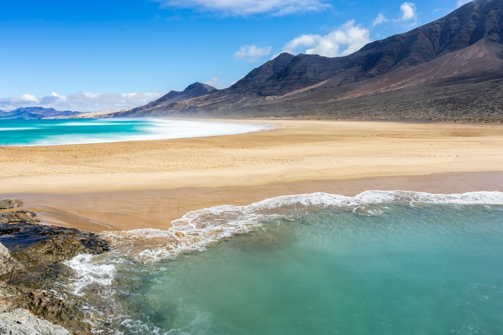
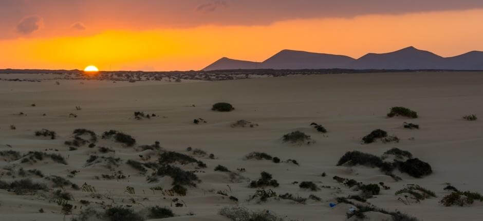
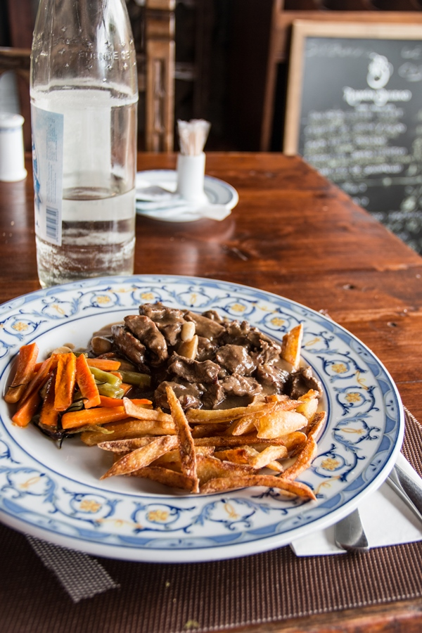

Zobacz Fuerteventurę!
Fuerteventura, druga co do wielkości wyspa w archipelagu Wysp Kanaryjskich, to prawdziwy raj dla miłośników plaż i błogiego wypoczynku. Znana ze swoich rozległych, złocistych wybrzeży, krystalicznie czystej wody i spokojnej atmosfery, wyspa oferuje wszystko, czego potrzeba, aby naładować baterie z dala od zgiełku codzienności.
Wyspa słynie z jednych z najpiękniejszych plaż w Europie. Corralejo i Sotavento to miejsca, które zachwycają rozległymi wydmami i turkusowym oceanem. Idealne zarówno dla rodzin, jak i miłośników sportów wodnych, takich jak windsurfing, kitesurfing czy nurkowanie. Dzięki stałym wiatrom i doskonałym warunkom Fuerteventura jest jednym z najlepszych miejsc na świecie do uprawiania tych sportów.
Naturalne piękno wyspy można odkrywać w jej dziewiczych zakątkach, takich jak Park Naturalny Corralejo z rozległymi wydmami czy malownicza wyspa Lobos, idealna na jednodniowy wypad. Wnętrze wyspy to kraina wulkanicznych krajobrazów, urokliwych wiosek i tradycyjnych plantacji aloesu, który jest jednym z symboli Fuerteventury.
Miłośnicy lokalnej kultury powinni odwiedzić Betancurię – pierwszą stolicę wyspy, gdzie wśród kolonialnej architektury można poczuć ducha dawnych czasów. Nie można też pominąć targów rzemieślniczych, gdzie znajdziemy lokalne wyroby, takie jak słynne sery kozie Majorero, które zdobywają międzynarodowe nagrody.
Kuchnia Fuerteventury to uczta dla podniebienia. Świeże ryby, owoce morza i tradycyjne dania kanaryjskie, takie jak papas arrugadas z mojo, zachwycą każdego smakosza. A do tego kieliszek lokalnego wina lub tropikalne koktajle przy zachodzie słońca – idealny sposób na zakończenie dnia.
Fuerteventura to wyspa, która zachwyca swoją prostotą i harmonią. Niezależnie od tego, czy szukasz relaksu, kontaktu z naturą, czy aktywności na wodzie, Fuerteventura oferuje niezapomniane wrażenia, spokój i przestrzeń, które zostaną w pamięci na długo. To idealne miejsce na wakacje w stylu slow life.